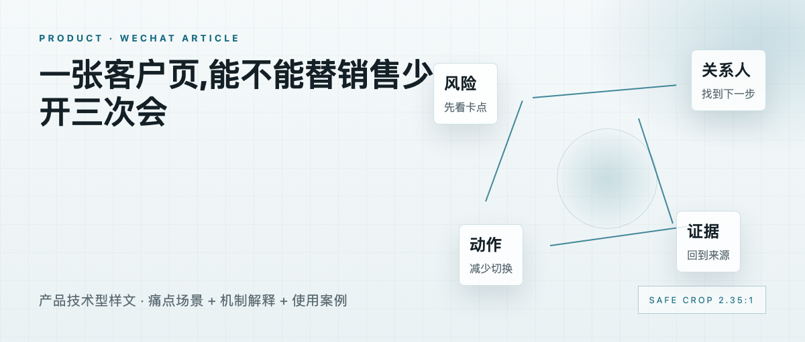
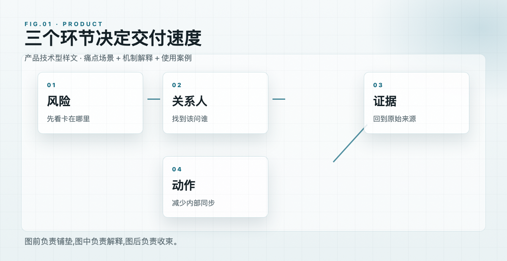

一张客户页,能不能替销售少开三次会
产品技术型样文 · 痛点场景 + 机制解释 + 使用案例

样文 · 销售工作台的客户页
销售开会前最耗时间的环节,常常是重新拼一遍客户背景。
合同在哪一步、上次谁反对、技术问题有没有解决、预算窗口什么时候关闭,这些信息散在聊天、邮件和表格里。
01
客户页要先回答三个问题
第一,这单现在卡在哪里。第二,下一步该找谁。第三,有哪些风险不能再拖。
如果客户页只展示字段,销售还是要自己判断。好的客户页应该把信息整理成行动顺序。

FIG 01 · 从散点信息到行动顺序
图里的重点是顺序:先看风险,再看关系人,最后看下一步动作。这样销售不用从十几个字段里重新推理。
02
技术细节要落到场景
系统会读取会议纪要、邮件和 CRM 记录,把重复出现的异议归在一起。预算、竞品、法务、集成问题分别进入不同标签。
当销售打开客户页时,页面先给出三条可追问线索,再列出原始证据。这样既能快,也能回到来源。
“销售少问三个人,这个页面才有价值。”
—— 样文代拟引语,发布前需确认
产品价值最终落在节省切换上。少开一次内部同步会,比多一个漂亮看板更容易被记住。
关于样文:本文为排版测试内容,用于验证产品技术型文章的机制解释和图文衔接。